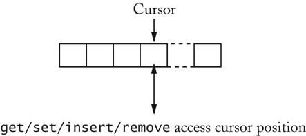

previous
|
start
|
next
List with Cursor

for (list.reset(); list.hasNext(); list.next())
{
Object x = list.get();
. . .
}
Disadvantage: Only one cursor per list
Iterator is superior concept
previous
|
start
|
next